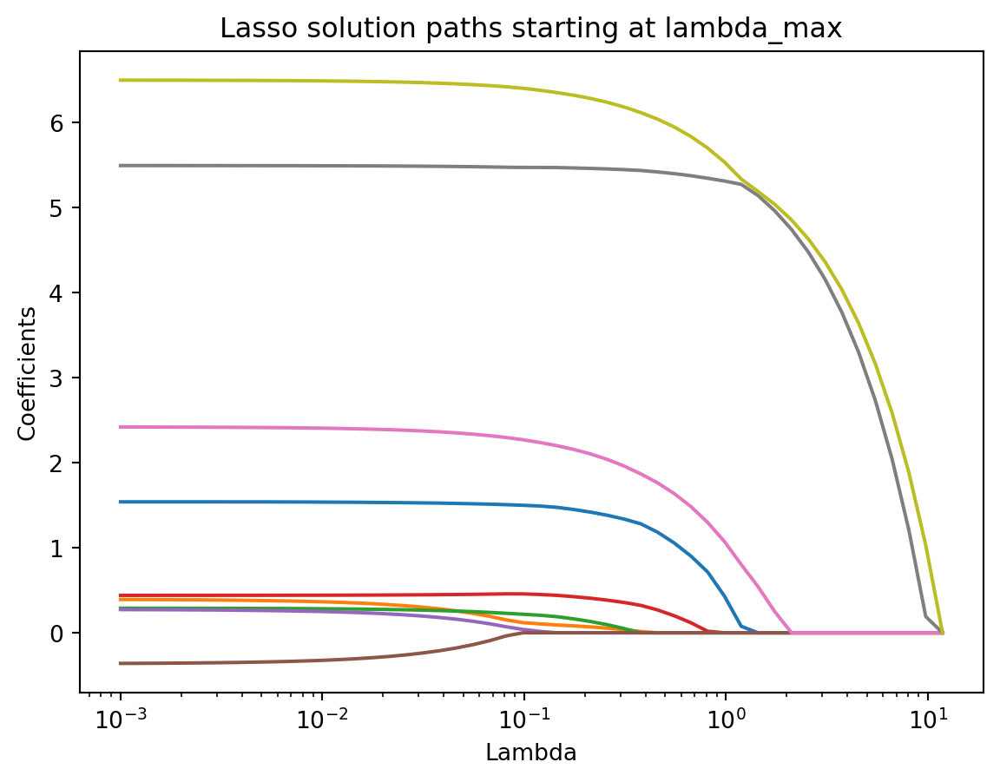

import openml
import pandas as pd
# Load Ames Housing dataset (OpenML ID 42165)
dataset = openml.datasets.get_dataset(42165)
df, *_ = dataset.get_data()8 Regression Models
Regression is a fundamental tool in data science and statistics for modeling relationships between variables. It provides a framework to explain how a response variable changes when one or more explanatory variables vary, and it serves as a foundation for prediction, interpretation, and decision making. Regression models are used in a wide range of applications, from estimating the effect of education on income to predicting housing prices based on property characteristics.
8.1 Introduction
This chapter introduces regression through a unified set of examples using the Ames Housing dataset. The dataset contains detailed information about housing sales in Ames, Iowa. It has become a popular benchmark for regression tasks, replacing the older Boston Housing dataset due to its larger size and richer set of features. Throughout the chapter, we will use this dataset to illustrate concepts of regression modeling, including model formulation, fitting, diagnosis, and extensions such as regularization, GLM, and GAM. Because many variables in the dataset record absence with NA (for example, NA in the alley variable indicates no alley access), careful preprocessing is required before modeling.
8.1.1 Ames Housing Data Cleaning
The Ames housing data will be used for illustration, but it requires careful preprocessing. A distinctive feature of this dataset is that many NA values do not represent missing information but instead denote the absence of a feature. Treating them as missing would discard useful signals, so they should be recoded explicitly.
First, we retrieve the data to ensure reproducibility.
For categorical variables, NA often means that the property does not have the feature. For example, Alley is NA when no alley access exists, FireplaceQu is NA when no fireplace is present, and PoolQC is NA when the house does not have a pool. In these cases, NA should be replaced with an explicit category such as “None.”
none_cols = [
"Alley", "FireplaceQu", "PoolQC", "Fence", "MiscFeature",
"GarageType", "GarageFinish", "GarageQual", "GarageCond",
"BsmtQual", "BsmtCond", "BsmtExposure", "BsmtFinType1",
"BsmtFinType2", "MasVnrType"
]
for col in none_cols:
df[col] = df[col].fillna("None")For numeric variables, NA may also indicate absence. Examples include GarageCars, GarageArea, and basement square footage variables. When no garage or basement is present, the correct encoding is zero. Thus, these columns should be filled with 0 rather than treated as missing.
zero_cols = [
"GarageCars", "GarageArea",
"BsmtFinSF1", "BsmtFinSF2", "BsmtUnfSF",
"TotalBsmtSF", "BsmtFullBath", "BsmtHalfBath",
"MasVnrArea"
]
for col in zero_cols:
df[col] = df[col].fillna(0)Finally, some variables contain genuinely missing data. A common example is LotFrontage, which records the linear feet of street connected to a property. Here NA values reflect unavailable measurements. These can be imputed using summary statistics such as the median or by more advanced methods if desired.
df["LotFrontage"] = df["LotFrontage"].fillna(df["LotFrontage"].median())This structured cleaning step ensures that absence is distinguished from missingness, numeric zero values are meaningful, and true missing values are handled appropriately. Only after this preparation is the dataset ready for modeling.
8.2 Linear Regression Model
The starting point of regression analysis is the specification of a model that links a response variable to one or more explanatory variables. In the simplest form, the relationship is described by a linear function plus an error term:
\[ Y_i = \beta_0 + \beta_1 X_{i1} + \cdots + \beta_p X_{ip} + \varepsilon_i, \]
where \(Y_i\) is the response for observation \(i\), \(X_{ij}\) are the explanatory variables, \(\beta_j\) are unknown coefficients, and \(\\varepsilon_i\) is a random error term. The model asserts that systematic variation in the response is captured by a linear combination of predictors, while unsystematic variation is left to the error.
For linear regression to yield valid estimates and inference, several assumptions are commonly made. The form of the mean function is assumed linear in parameters. The error terms are assumed to have mean zero and constant variance, and to be independent across observations. When sample sizes are small, normality of the errors is sometimes assumed to justify exact inference. With larger samples, asymptotic results make this assumption less critical, and estimation of coefficients by least squares does not require it. Finally, explanatory variables should not be perfectly collinear. These assumptions guide model fitting and motivate the diagnostic checks that follow.
8.2.1 Fitting
Fitting a regression model means finding estimates of the coefficients that make the model align with observed data. The most common approach is ordinary least squares, which minimizes the sum of squared residuals:
\[ L(\beta) = \sum_{i=1}^n (Y_i - \beta_0 - \beta_1 X_{i1} - \cdots - \beta_p X_{ip})^2. \]
Here \(L(\beta)\) is the loss function, measuring how far predictions are from observed responses. Minimizing this quadratic loss yields closed form solutions for the coefficient estimates when predictors are not perfectly collinear. Computationally, this involves solving the normal equations or using matrix decompositions such as QR or singular value decomposition, which provide stable and efficient solutions.
This framework also sets the stage for extensions. By modifying the loss function to include penalty terms, one obtains regularization methods such as ridge regression or the lasso. The optimization remains similar in spirit but balances data fit with model complexity. Later sections will show how these modifications improve prediction and interpretability when many predictors are involved.
Housing prices are highly skewed, with a long right tail. To stabilize variance and make the model fit better, it is common to use the log of SalePrice as the response:
\[ Y_i = \log(\text{SalePrice}_i). \]
We add this transformed response to the dataset.
import numpy as np
df["LogPrice"] = np.log(df["SalePrice"])Many studies and analyses of the Ames data have found certain variables to be consistently important for predicting sale price. These include OverallQual (overall material and finish quality), GrLivArea (above- ground living area), GarageCars (garage capacity), TotalBsmtSF (total basement area), YearBuilt (construction year), FullBath (number of full bathrooms), and KitchenQual (kitchen quality). We will focus on these predictors to illustrate model fitting.
Instead of manually creating dummy variables, we can use the formula API from statsmodels, which handles categorical predictors internally.
import statsmodels.formula.api as smf
formula = (
"LogPrice ~ OverallQual + GrLivArea + GarageCars + "
"TotalBsmtSF + YearBuilt + FullBath + C(KitchenQual)"
)We then fit the regression model directly with the formula.
model = smf.ols(formula, data=df).fit()Finally, we examine the regression results, which highlight the most important predictors of log sale price.
model.summary()| Dep. Variable: | LogPrice | R-squared: | 0.819 |
| Model: | OLS | Adj. R-squared: | 0.818 |
| Method: | Least Squares | F-statistic: | 727.5 |
| Date: | Thu, 02 Oct 2025 | Prob (F-statistic): | 0.00 |
| Time: | 14:02:14 | Log-Likelihood: | 515.19 |
| No. Observations: | 1460 | AIC: | -1010. |
| Df Residuals: | 1450 | BIC: | -957.5 |
| Df Model: | 9 | ||
| Covariance Type: | nonrobust |
| coef | std err | t | P>|t| | [0.025 | 0.975] | |
| Intercept | 6.8033 | 0.419 | 16.219 | 0.000 | 5.980 | 7.626 |
| C(KitchenQual)[T.Fa] | -0.2146 | 0.037 | -5.780 | 0.000 | -0.287 | -0.142 |
| C(KitchenQual)[T.Gd] | -0.0653 | 0.020 | -3.257 | 0.001 | -0.105 | -0.026 |
| C(KitchenQual)[T.TA] | -0.1348 | 0.023 | -5.931 | 0.000 | -0.179 | -0.090 |
| OverallQual | 0.0882 | 0.006 | 15.841 | 0.000 | 0.077 | 0.099 |
| GrLivArea | 0.0002 | 1.34e-05 | 17.987 | 0.000 | 0.000 | 0.000 |
| GarageCars | 0.0822 | 0.008 | 10.056 | 0.000 | 0.066 | 0.098 |
| TotalBsmtSF | 0.0001 | 1.28e-05 | 9.134 | 0.000 | 9.2e-05 | 0.000 |
| YearBuilt | 0.0021 | 0.000 | 9.686 | 0.000 | 0.002 | 0.003 |
| FullBath | -0.0087 | 0.012 | -0.727 | 0.467 | -0.032 | 0.015 |
| Omnibus: | 962.926 | Durbin-Watson: | 1.990 |
| Prob(Omnibus): | 0.000 | Jarque-Bera (JB): | 36561.376 |
| Skew: | -2.522 | Prob(JB): | 0.00 |
| Kurtosis: | 26.991 | Cond. No. | 2.57e+05 |
Notes:
[1] Standard Errors assume that the covariance matrix of the errors is correctly specified.
[2] The condition number is large, 2.57e+05. This might indicate that there are
strong multicollinearity or other numerical problems.
The output gives estimated coefficients, standard errors, and measures of fit. At this stage, several questions naturally arise:
- How should we interpret a coefficient when the outcome is on the log scale? For instance, what does a one-unit increase in
OverallQualimply for expected sale price? - How do we compare the importance of variables measured on different scales, such as square footage and construction year?
- What role do categorical variables like
KitchenQualplay, and how do we interpret their dummy coefficients relative to the baseline? - Which predictors are statistically significant, and does significance necessarily imply practical importance?
- How well does the model explain variation in housing prices, and what limitations might remain?
These questions guide us in interpreting the fitted model and connect directly to the diagnostic checks discussed in the next section.
8.2.2 Diagnosis
Once a regression model has been fitted, it is essential to examine whether the underlying assumptions hold and whether the model provides a useful description of the data. Diagnostics help identify potential problems such as non-linearity, heteroscedasticity, influential points, and violations of independence.
The first step is to examine residuals, defined as the difference between observed and fitted values:
\[ \hat{\varepsilon}_i = Y_i - \hat{Y}_i. \]
Plotting residuals against fitted values reveals whether variance is constant and whether systematic patterns remain.
import matplotlib.pyplot as plt
fitted_vals = model.fittedvalues
residuals = model.resid
plt.scatter(fitted_vals, residuals, alpha=0.5)
plt.axhline(0, color="red", linestyle="--")
plt.xlabel("Fitted values")
plt.ylabel("Residuals")
plt.title("Residuals vs Fitted")
plt.show()
Another check is the distribution of residuals. A histogram or Q-Q plot can indicate whether residuals are approximately normal, which is most relevant for inference in small samples.
plt.hist(residuals, bins=30, edgecolor="black")
plt.xlabel("Residuals")
plt.title("Histogram of residuals")
plt.show()
influence = model.get_influence()
std_resid = influence.resid_studentized_internal
import statsmodels.api as sm
sm.qqplot(std_resid, line="45")
plt.title("Q-Q plot of residuals")
plt.show()Influential observations can distort regression results. Leverage and Cook’s distance are standard measures to detect such points.
cooks = influence.cooks_distance[0]
plt.scatter(fitted_vals, cooks, alpha=0.5)
plt.xlabel("Fitted values")
plt.ylabel("Cook's distance")
plt.title("Influence diagnostics")
plt.show()Key questions to raise at this stage are:
- Do residuals appear randomly scattered, suggesting the linear model is adequate?
- Is there evidence of non-constant variance or other systematic patterns?
- Are residuals approximately normal, and does this matter given the sample size?
- Which points exert disproportionate influence on the fitted model?
These diagnostic tools guide improvements, such as transformations, adding interaction terms, or considering alternative modeling approaches.
8.3 Regularized Regression
8.3.1 Motivation
Ordinary least squares can perform poorly when there are many predictors or when predictors are highly correlated. In such cases, estimated coefficients become unstable and prediction accuracy suffers. Regularization introduces penalties on the size of coefficients, leading to simpler and more robust models.
To illustrate, we return to the Ames data. Suppose we fit a model with a large set of predictors. Ordinary least squares will attempt to explain every fluctuation in the data, potentially overfitting. A regularized approach reduces this risk by shrinking coefficients, improving out-of-sample prediction.
8.3.2 Formulation
The penalized regression framework modifies the least squares objective:
\[ L(\beta) = \sum_{i=1}^n (Y_i - X_i^\top \beta)^2 + \lambda P(\beta), \]
where \(P(\beta)\) is a penalty function and \(\lambda\) controls its strength.
For ridge regression the penalty is
\[ P(\beta) = \sum_j \beta_j^2, \]
which shrinks coefficients smoothly toward zero but never sets them exactly to zero. For lasso regression the penalty is
\[ P(\beta) = \sum_j |\beta_j|. \]
Because the absolute value has a sharp corner at zero, lasso can shrink some coefficients exactly to zero. This property allows lasso to perform variable selection and estimation in a single step, producing sparse models in which unimportant predictors are excluded automatically. Elastic net combines both types of penalties.
8.3.3 Algorithms
Ridge regression has a closed-form solution obtained by modifying the normal equations. Lasso and elastic net require iterative algorithms, with coordinate descent being the most widely used. In practice, these algorithms are efficient and scale well to high-dimensional data.
When using scikit-learn, predictors must be numeric. Since the Ames data include categorical variables such as KitchenQual, we need to encode them. We use a OneHotEncoder inside a ColumnTransformer. This transforms categorical variables into binary indicator columns while keeping numeric variables unchanged. The drop="first" option avoids perfect collinearity by omitting one reference category.
from sklearn.preprocessing import StandardScaler
from sklearn.preprocessing import OneHotEncoder
from sklearn.compose import ColumnTransformer
from sklearn.pipeline import Pipeline
from sklearn.linear_model import Ridge, Lasso
from sklearn.model_selection import train_test_split
numeric_features = [
"OverallQual", "GrLivArea", "GarageCars",
"TotalBsmtSF", "YearBuilt", "FullBath"
]
categorical_features = ["KitchenQual"]
preprocessor = ColumnTransformer(
transformers=[
("num", StandardScaler(), numeric_features),
("cat", OneHotEncoder(drop="first"), categorical_features)
]
)
X = df[numeric_features + categorical_features]
y = df["LogPrice"]
X_train, X_test, y_train, y_test = train_test_split(
X, y, test_size=0.3, random_state=42
)
ridge = Pipeline(steps=[
("preprocessor", preprocessor),
("model", Ridge(alpha=10))
]).fit(X_train, y_train)
lasso = Pipeline(steps=[
("preprocessor", preprocessor),
("model", Lasso(alpha=0.1))
]).fit(X_train, y_train)8.3.4 Solution Paths
As the penalty parameter \(\lambda\) decreases, the behavior of coefficients changes. Ridge coefficients approach ordinary least squares estimates, while lasso coefficients enter the model sequentially, illustrating variable selection.
Because predictors must be on the same scale for a fair comparison, it is important to standardize the numeric variables before computing the lasso path. Without standardization, some coefficients can appear flat or dominate others due to differences in scale.
In our Ames example, we have six numeric predictors and three dummy variables for KitchenQual (since one category was dropped). This means we are estimating nine coefficients in total, excluding the intercept. All nine should appear in the solution path once variables are properly scaled.
from sklearn.preprocessing import StandardScaler
from sklearn.linear_model import lasso_path
import numpy as np
# Standardized predictors
X_proc = preprocessor.fit_transform(X_train)
scaler = StandardScaler(with_mean=False)
X_proc_std = scaler.fit_transform(X_proc)
# Compute lambda_max
n_samples = X_proc_std.shape[0]
lambda_max = np.max(np.abs(X_proc_std.T @ y_train)) / n_samples
# Define a grid of lambda values
alphas = np.logspace(np.log10(lambda_max), -3, 50)
# Compute solution path
alphas, coefs, _ = lasso_path(X_proc_std, y_train, alphas=alphas)
plt.plot(alphas, coefs.T)
plt.xscale("log")
plt.xlabel("Lambda")
plt.ylabel("Coefficients")
plt.title("Lasso solution paths starting at lambda_max")
plt.show()
This plot reveals how each coefficient evolves as \(\lambda\) changes. At large values of \(\lambda\), coefficients are shrunk close to zero. As \(\lambda\) decreases, more predictors enter the model. The intercept is not included in the path and should be ignored when interpreting these curves.
8.3.5 Tuning Parameter Selection
Choosing \(\lambda\) is critical. Too large, and the model is oversmoothed; too small, and the penalty has little effect. This parameter controls the trade-off between model fit and complexity:
- When \(\lambda = 0\), the model reduces to the unpenalized regression.
- As \(\lambda \to \infty\), coefficients shrink toward zero, increasing bias but reducing variance.
Choosing \(\lambda\) appropriately is crucial. A general principle is to define a selection criterion \(C(\lambda)\), which measures the predictive or explanatory performance of the fitted model, and then select \(\hat{\lambda} = \arg\min_{\lambda} C(\lambda)\).
Common criteria:
- \(R^2\) on a validation set: select \(\lambda\) that maximizes explained variance.
- Information criteria (AIC, BIC): less common in practice for penalized regression.
- Cross-validation (CV): partition data, fit on training folds, evaluate on holdout fold, average prediction error across folds.
The grid of candidate values is not arbitrary:
Maximum value:
\[ \lambda_{\max} = \max_j \tfrac{1}{n} |x_j^\top y|, \]
with standardized predictors. At this level, all coefficients are zero.
Minimum value: \[ \lambda_{\min} = \epsilon \cdot \lambda_{\max}, \] with \(\epsilon = 10^{-3}\) if \(n > p\) and \(\epsilon = 10^{-2}\) otherwise.
Grid: values are log-spaced between \(\lambda_{\max}\) and \(\lambda_{\min}\) (default 100 points in
scikit-learn).
In the Ames example, we can use \(k\)-fold cross-validation to evaluate ridge and lasso models.
from sklearn.linear_model import LassoCV
from sklearn.pipeline import Pipeline
from sklearn.model_selection import KFold
# Lasso with 10-fold CV
lasso_cv = LassoCV(
cv=KFold(n_splits=10, shuffle=True, random_state=123),
random_state=123
)
# Pipeline with preprocessing + model
pipe = Pipeline(steps=[
("preprocessor", preprocessor),
("model", lasso_cv)
])
pipe.fit(X, y)
# Selected lambda
best_lambda = pipe.named_steps["model"].alpha_
print("Best lambda (alpha) selected by CV:", best_lambda)Best lambda (alpha) selected by CV: 0.0003263140336320298This process identifies the tuning parameter that balances bias and variance most effectively, yielding a model that generalizes well beyond the training data.
8.4 Generalized Linear Models
8.4.1 Introduction
Linear regression is a powerful tool for continuous outcomes under Gaussian assumptions, but many response variables encountered in practice are not continuous or normally distributed. For example, an indicator of whether a house sale price is above the median is binary, the number of bathrooms is a count, and proportions such as the fraction of remodeled homes lie between 0 and 1. Using linear regression in these settings can yield nonsensical predictions (e.g., negative counts or probabilities outside the unit interval).
Generalized linear models (GLMs) extend linear regression to cover a wider range of outcomes. The key idea is to preserve the familiar linear predictor structure, while linking it to the mean of the outcome through a function that reflects the nature of the data. The formal framework was introduced by Nelder & Wedderburn (1972) and remains central in modern statistics. Today, GLMs are viewed more flexibly: the distributional assumption provides a convenient likelihood-based loss function, but in practice one can proceed with quasi-likelihood or even direct loss minimization without strict distributional commitment.
8.4.2 Framework
GLMs extend linear regression by introducing a link function between the linear predictor and the conditional mean of the response. In linear regression we write
\[ Y_i = X_i^\top \beta + \varepsilon_i \]
with mean zero error \(\varepsilon_i\)’s.
The mean is simply \(\mu_i = X_i^\top \beta\). In a GLM, we allow non-Gaussian outcomes by defining
\[ \eta_i = X_i^\top \beta, \quad g(\mu_i) = \eta_i, \]
where \(g(\cdot)\) is a monotone link function, \(\mu_i = \mathbb{E}(Y_i)\), and \(\beta\) are regression coefficients. The coefficients maintain the same interpretation as in linear regression: a one-unit change in a predictor shifts the linear predictor \(\eta_i\) by its coefficient, with an indirect effect on \(\mu_i\) through the link.
The variance of \(Y_i\) depends on the mean: \(\text{Var}(Y_i) = V(\mu_i) \cdot \phi\), where \(V(\cdot)\) is the variance function and \(\phi\) is a dispersion parameter. This structure arises naturally from the exponential family, which provides a unifying framework for GLMs. While exact distributional assumptions can be specified, the mean–variance relationship is often sufficient.
8.4.3 Special Cases
Logistic regression
For binary outcomes,
\[ Y_i \sim \text{Bernoulli}(\mu_i), \qquad g(\mu_i) = \log \frac{\mu_i}{1-\mu_i}. \]
The coefficient \(\beta_j\) quantifies the log-odds change of success for a one-unit increase in \(x_{ij}\), with other covariates held fixed.
Poisson regression
For count data,
\[ Y_i \sim \text{Poisson}(\mu_i), \qquad g(\mu_i) = \log(\mu_i). \]
The coefficient \(\beta_j\) is interpreted as the log rate ratio, where \(\exp(\beta_j)\) gives the multiplicative change in expected count for a one-unit increase in \(x_{ij}\).
Gaussian regression
For continuous responses,
\[ Y_i \sim N(\mu_i, \sigma^2), \qquad g(\mu_i) = \mu_i. \]
The coefficient \(\beta_j\) represents the expected change in the response for a one-unit increase in \(x_{ij}\).
Thus, GLMs preserve the linear predictor while flexibly adapting the link and variance structure to suit binary, count, and continuous data.
8.4.4 Fitting and Diagnosis
Estimation in generalized linear models is typically carried out by maximum likelihood. The parameters \(\beta\) are obtained by solving the score equations, which in practice are computed through numerical optimization. A common algorithm is iteratively reweighted least squares (IRLS), which updates coefficient estimates using weighted least squares until convergence. In Python, functions such as statsmodels.api.GLM or sklearn.linear_model.LogisticRegression implement this estimation automatically, providing coefficient estimates along with standard errors and confidence intervals when applicable.
After fitting a GLM, model adequacy should be checked through diagnostics. Residuals such as deviance residuals or Pearson residuals can reveal lack of fit and highlight influential observations. Goodness of fit can also be assessed with deviance statistics, likelihood ratio tests, or pseudo-\(R^2\) measures. In Python, statsmodels provides methods like .resid_deviance, .resid_pearson, and influence statistics to assess model fit. Visual inspection through residual plots remains a practical tool to detect systematic deviations from model assumptions.
8.4.5 Regularized GLM
Regularization extends generalized linear models by adding a penalty to the log-likelihood, which stabilizes estimation in high-dimensional settings and enables variable selection. The optimization problem can be formulated as
\[ \hat{\beta} = \arg\min_{\beta} \Big\{ -\ell(\beta) + \lambda P(\beta) \Big\}, \]
where \(\ell(\beta)\) is the log-likelihood, \(P(\beta)\) is a penalty function, and \(\lambda\) is a tuning parameter controlling the strength of shrinkage.
Common choices of \(P(\beta)\) include:
- Ridge (\(L_2\)): \(\sum_j \beta_j^2\).
- Lasso (\(L_1\)): \(\sum_j |\beta_j|\).
- Elastic Net: \(\alpha \sum_j |\beta_j| + (1-\alpha)\sum_j \beta_j^2\).
The fitting algorithm typically involves coordinate descent or gradient- based optimization methods, which are efficient for large-scale data and sparse solutions. For example, the glmnet algorithm uses cyclical coordinate descent with warm starts.
Selection of the tuning parameter \(\lambda\) is crucial. A standard approach is cross-validation, where data are split into folds, the model is fitted on training folds for a grid of \(\lambda\) values, and performance is evaluated on validation folds. The \(\lambda\) yielding the lowest prediction error is chosen, sometimes with an additional rule to prefer more parsimonious models (the “one standard error rule”).
In Python, sklearn.linear_model.LogisticRegressionCV or sklearn.linear_model.ElasticNetCV implement these ideas, providing automatic cross-validation for regularized GLMs.
The general workflow for fitting a regularized logistic regression model is:
- Define predictors and outcome: choose relevant numeric and categorical features, and specify the binary response.
- Preprocess features: standardize numeric predictors with
StandardScaler()and encode categorical predictors withOneHotEncoder(). - Set up the pipeline: combine preprocessing with the logistic regression model in a unified workflow.
- Fit with cross-validation: use
LogisticRegressionCVwith lasso (L1) or elastic net penalties. Cross-validation automatically selects the tuning parameter \(\lambda\). - Inspect coefficients: identify which predictors remain with nonzero coefficients, interpreting them as important contributors to the outcome.
- Evaluate performance: measure predictive accuracy or AUC (see chapter on classification) on a held-out test set to assess generalization.
This structured process ensures stability, interpretability, and good predictive performance when fitting regularized logistic models.
8.4.6 Example: Regularized GLM with Ames Housing Data
We continue with the processed Ames housing dataset (OpenML id 42165) from earlier in the regression chapter. The task is to predict whether a home is “expensive” (above the median sale price) using selected predictors. We fit a logistic regression model with an \(L_1\) (lasso) penalty to enable variable selection.
from sklearn.linear_model import LogisticRegressionCV
from sklearn.pipeline import Pipeline
# Binary outcome: 1 if SalePrice > median
median_price = df["SalePrice"].median()
y = (df["SalePrice"] > median_price).astype(int)
# Logistic regression with L1 penalty and cross-validation
logit_lasso_cv = Pipeline(steps=[
("preprocessor", preprocessor),
("model", LogisticRegressionCV(
Cs=20, cv=5, penalty="l1", solver="saga",
scoring="accuracy", max_iter=5000,
random_state=0
))
])
logit_lasso_cv.fit(X, y)
# Extract selected coefficients
model = logit_lasso_cv.named_steps["model"]
feature_names = (
numeric_features +
list(logit_lasso_cv.named_steps["preprocessor"]
.named_transformers_["cat"]
.get_feature_names_out(categorical_features))
)
print("Selected coefficients (lasso):")
for name, coef in zip(feature_names, model.coef_[0]):
print(f"{name}: {coef:.4f}")
print("\nBest C (inverse of lambda):", model.C_[0])Selected coefficients (lasso):
OverallQual: 1.1998
GrLivArea: 1.6516
GarageCars: 0.6534
TotalBsmtSF: 0.5812
YearBuilt: 0.8845
FullBath: 0.1628
KitchenQual_Fa: -1.2791
KitchenQual_Gd: -0.0467
KitchenQual_TA: -0.9568
Best C (inverse of lambda): 1.623776739188721This example demonstrates how lasso-penalized logistic regression can be used within the GLM framework. The penalty shrinks coefficients toward zero, with some set exactly to zero if uninformative, thereby improving interpretability and predictive stability.
We can evaluate classification performance by computing the confusion matrix:
from sklearn.metrics import confusion_matrix, ConfusionMatrixDisplay
# Predictions
y_pred = logit_lasso_cv.predict(X)
# Confusion matrix
cm = confusion_matrix(y, y_pred)
disp = ConfusionMatrixDisplay(confusion_matrix=cm,
display_labels=["Not Expensive", "Expensive"])
disp.plot(cmap="Blues")